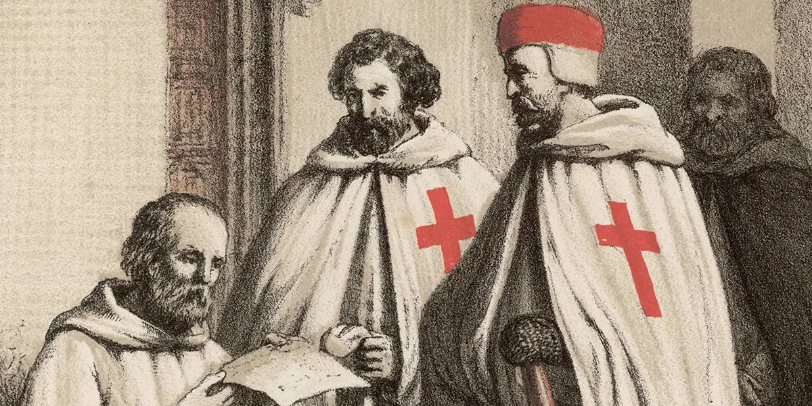
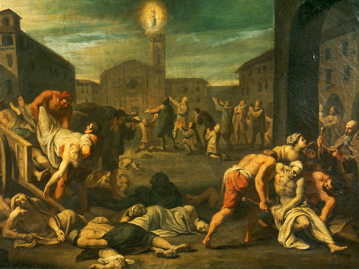

The Knights Templar was a large organization of devout Christians during the medieval era who carried out an important mission: to protect European travelers visiting sites in the Holy Land while also carrying out military operations. A wealthy, powerful and mysterious order that has fascinated historians and the public for centuries, tales of the Knights Templar, their financial and banking acumen, their military prowess and their work on behalf of Christianity during the Crusades still circulate throughout modern culture.

The Black Death was a devastating global epidemic of bubonic plague that struck Europe and Asia in the mid-1300s. The plague arrived in Europe in October 1347, when 12 ships from the Black Sea docked at the Sicilian port of Messina. People gathered on the docks were met with a horrifying surprise: Most sailors aboard the ships were dead, and those still alive were gravely ill and covered in black boils that oozed blood and pus. Sicilian authorities hastily ordered the fleet of “death ships” out of the harbor, but it was too late: Over the next five years, the Black Death would kill more than 20 million people in Europe—almost one-third of the continent’s population.

The name the Hundred Years’ War has been used by historians since the beginning of the nineteenth century to describe the long conflict that pitted the kings and kingdoms of France and England against each other from 1337 to 1453. Two factors lay at the origin of the conflict: first, the status of the duchy of Guyenne (or Aquitaine)-though it belonged to the kings of England, it remained a fief of the French crown, and the kings of England wanted independent possession; second, as the closest relatives of the last direct Capetian king (Charles IV, who had died in 1328), the kings of England from 1337 claimed the crown of France.